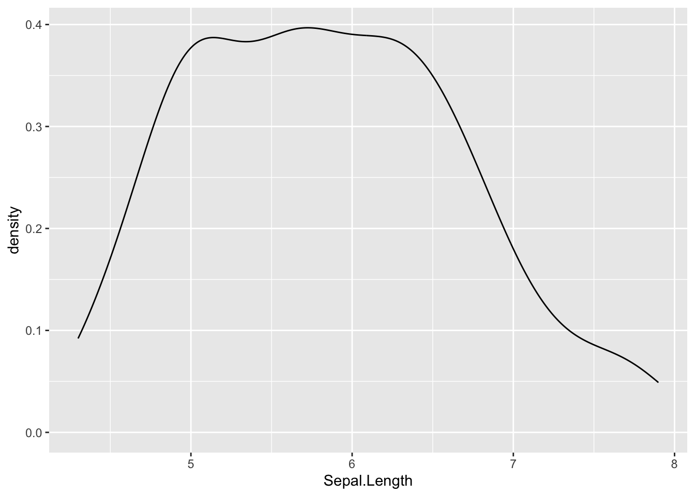

# set your global chunk print options
knitr::opts_chunk$set(eval = T, # T = evaluate code, F = do not evaluate code
echo = T, # 'print code chunk?'
message = F, # 'print messages (e.g., warnings)?'
error = F,
warning = F)Example source code
Writing a structured and reproducible document
1 Global code chunk options
You can define how all your code chunks should be handled in the document. This way, you don’t have to set individual code chunks. By default, code chunks will be:
- evaluated (
eval = T) - printed in the output file (
echo = T), - and messages (warnings/errors/messages) will be printed (
message = F)
I don’t like when messages or errors are printed in my output. So I usually use the following global options to force messages (message = F) and warnings (warning = F) to not be printed. I also don’t want to force the document to be printed even if errors are encountered in my code (error = F), although this option is best left as its default (error = T) for a final version.
1.1 Overwriting global options
You can also decide for a certain code chunk to behave differently from the global options. I want to print the following code (echo = T), but to not run it (eval = F). To do this, I add #| eval: false in the first line of the code chunk (not visible in the output file but in the source code):
iris |> summary()To learn more about code-chunk execution options, check out the Quarto website page on the topic.
2 Data visualisation with ggplot2
- ggplot2 uses a layered grammar of graphics
- some other notes
# load in libraries
library(ggplot2)
library(tidyverse)
# now we have ggplot2 and tidyverse- now we have ggplot2 and tidyverse
2.1 Distributions
Plots that show distributions often have the measure variable (dependent variable) along one axis (usually the x-axis) and count the number of observations on the other axis (usually the y-axis). Examples include:
- histograms
- density plots
You can also see the relationship of observations from two variables using:
- scatter plots
2.1.1 Scatterplot
- start a new code chunk with Cmd/Ctrl+Alt/Option+I
- this will be a scatterplot
# make a plot
iris |>
ggplot(aes(Sepal.Length, Sepal.Width)) +
geom_point()
2.1.2 Density plot
# make a plot
iris |>
ggplot(aes(Sepal.Length)) +
geom_density()
2.2 Summary statistics
- things like interaction plots